LLM的后训练里，rollout一项就吃掉70%–80% 的训练时间。它的长尾特性让大量GPU空转：有的worker早把分配到的prompt生成完了，其他worker还在为少数难题反复解码，而训练步必须等所有人结束。
这篇论文来自上海交大IPADS与字节Seed，把推理侧的推测解码搬到rollout上，并针对训练场景重做了两处关键设计：大batch下验证比生成还慢，以及不同请求的最优草稿方法并不相同。系统叫SpecActor，基于veRL实现。
Rollout在后训练中占据训练时间的主要部分，其中训练好的模型根据一批prompt生成token。SpecActor通过推测解码实现快速rollout，部署一条快速draft路径来加速无法并行化的生成，同时通过与原始模型对输出进行快速并行验证来保证正确性。SpecActor解决了阻碍推测效率的两项基础性挑战：(1) Decoupled推测方法，克服了在每worker批大小相对较大时执行推测解码的计算低效问题，而这是训练中的常见配置，但对推测并不友好；(2) Fastest-of-N推测方法，根据rollout进展选择和组合不同的draft方法，从而在最优draft方法先验未知时也能逼近它。
在生产轨迹上的大量评估表明，相比常见的后训练基线，SpecActor将平均rollout速度提升2.0–2.4倍，最高提升2.7倍。该结果在稠密与MoE模型以及不同RL算法上保持一致。在不同轨迹上，SpecActor比vanilla推测rollout快1.1–2.6倍。加速后的rollout使端到端训练时间缩短1.4–2.3倍。
LLM（大语言模型）等大型基础模型在写作、编码等广泛任务上展现出卓越的准确率。用强化学习（RL）对这些模型进行后训练，已成为训练流程中的关键支柱，用于进一步增强模型在困难推理任务上的能力。
Rollout是后训练中关键且决定性能的阶段：每一步，系统向模型输入一批prompt，代表待解决的目标问题（例如数学或编码问题）。模型随后为每个prompt生成token以尝试求解。Rollout结束后，生成的token被评估，模型据此更新。Rollout天然地将批次并行到多个worker上。
问题陈述与现有解决方案。Rollout占后训练时间的75–80%。这种冗长且低效的执行主要源于生成中的长尾，并因等待最慢worker完成导致的GPU空闲而进一步加剧。长尾源于难度差异：某些问题需要比其他问题更多的token才能求解。因此，一个worker可能很快完成其分配到的prompt，而另一个则需要更长时间。为确保训练快速且稳定地收敛，必须等待所有请求完成后才能更新模型。
在这一硬性约束下，本文提出一个具体但重要的问题：如何在不改变模型训练方式的前提下加速LLM后训练中的rollout？
现有的与算法无关的解决方案分为两类，但鉴于LLM被训练以求解更复杂问题、生成长度不断增长的趋势，二者都未能充分解决该问题。第一类是重叠（overlapping），利用rollout中的空闲GPU执行训练流程的其他阶段。
它已被证明在短上下文RL训练中有效，但在长尾训练中效果较差，因为它并不直接加速rollout，平均仅带来1.1倍的加速。第二类利用并行性，使用空闲或超额配置的GPU加速后训练。但加速仍然有限（例如，GPU数量翻倍时最高1.2倍），因为LLM生成受内存带宽限制，无法充分利用额外的算力。
本工作：无损且高效的推测式rollout。我们提出SpecActor，一个快速的rollout系统，将推测解码（加速LLM（大语言模型）推理的常用技术）改造用于LLM（大语言模型）后训练。
具体而言，推测解码为顺序生成（解码）引入一条快速路径：首先，由远小于被训练模型的 “draft” 模型生成n个draft token的序列。随后，被训练模型验证这些token。一旦被接受，这些token即被视为由被训练模型生成。其原理是：验证n个token通常比生成它们更快（尽管使用的是同一个模型），因为验证可以并行处理多个token。
需要强调，推测解码可通过精确token匹配实现与原始解码相同的无损生成。此外，草稿器在后训练阶段即可获得：预训练流水线遵循既定的scaling实践同时生成小模型与大模型。再者，基于n-gram的草稿器无需模型。
尽管推测解码在推理中直观且有效，但在常见生产配置下，将vanilla推测解码应用于rollout最多只能带来10% 的加速（第5.2节），原因在于以下挑战。我们通过两项贡献进一步解决这些问题。
通过解耦式推测实现计算高效的rollout（第4.1节）。第一，推测解码的有效性主要取决于验证开销，而验证开销与每worker batch size成正比。然而，在常见训练配置下，例如每worker batch size为128（见图5 (a)），验证可能因触及GPU计算上限而比生成更慢，近期工作也注意到了这一点。尽管随着prompt完成，rollout过程中batch size会逐渐下降，但在rollout时间的相当一部分（20%）内它仍相对较大（不小于64），因此我们需要在对推测不友好的batch配置上实现高效执行。
关键观察是：存在加速验证的机会，因为vanilla推测执行由于draft-n-然后-验证的耦合依赖关系，限制了分配给（计算密集的）验证的GPU时间：验证器必须等待GPU利用率不足的草稿器任务。这一依赖关系对于确保所有请求都具备高推测效率是必要的（推理中即如此要求），因为若没有它，当验证拒绝1到n中的某个token时，草稿器会进一步浪费全部n之后个token。然而，对于仅关心batch完成时间的rollout而言，这种依赖过于保守，因此牺牲少量请求以加速其他请求是有益的。基于此，我们提出解耦式推测，以放松draft与验证之间的依赖。草稿器无需等待验证完成即可继续草稿生成，从而使后续验证能更早开始，最大化分配给验证的GPU时间。解耦的代价是由于更多在途未验证token导致接受率下降。幸运的是，许多请求的接受率仅略微下降，因此计算收益抵消了接受率损失。此外，我们进一步提出基于反馈的draft window机制，通过在线重配置动态最小化此类激进草稿生成所导致的token浪费。
通过Fastest-of-N推测实现有效的draft自适应（第4.2节）。第二，推测解码有多种候选draft方法，常见做法是依据性能分析或经验为所有请求选择单一草稿方法。然而，我们在rollout中发现不同请求适合不同的draft方法，因此使用单一固定方法可能导致长尾请求的推测效率低下。但为所有请求选择最优方法颇具挑战，因为对每个请求而言，最优方法不仅取决于草稿器的速度，还取决于验证的接受率。后者事先未知，因为它依赖于模型输出。
同时，为每个请求运行多种draft方法并不现实，因为这需要成比例增加的验证器，进而需要额外的GPU。
我们提出Fastest-of-N推测，通过以下三种技术为所有请求近似最优的draft方法。第一，提出一种名为draft ladder的新抽象，在给定draft方法池的前提下建立从各种接受率到加速比的映射，该映射可离线构建。基于该ladder，在rollout开始时，利用迄今为止性能分析得到的所有请求的平均接受率选择一个估计最快的draft方法。其原理是：即使每个请求的接受率差异显著，一个（大批次）请求的平均接受率在统计上是稳定的。因此，所选draft方法很可能接近该批次的最优解。最后，当rollout过程中批次大小减小、初始选择变为次优时，利用已完成worker释放出的GPU并行启动更多draft方法处理长尾请求，当最快的draft方法生成被验证器接受的结束符（EOS）时，该请求即完成。并行运行多个draft方法提高了在未知接受率下选出最快方法的可能性，同时利用空闲GPU避免了额外的GPU占用。
演示。SpecActor对任何训练算法都保持精确的rollout过程，算法设计者可无缝使用，无需担心潜在的精度损失。SpecActor基于veRL构建，后者是当前最先进的后训练框架。
SpecActor易于集成到其他训练框架，它可作为任意后训练流水线推理组件的即插即用替代，无需修改训练逻辑。大量评测表明，在多种真实训练trace以及GRPO、DAPO、PPO等常见后训练算法上，与veRL和RLHFuse等当前最先进方案相比，SpecActor将端到端训练时间加速1.4–2.3倍。此外，在不同trace上，比朴素的推测式rollout基线快最多2.6倍。
基于LLM的生成。LLM（大语言模型）通过prefill和decode两个阶段生成响应（称为token）。prefill阶段处理初始输入（称为prompt）以生成第一个token。随后decode阶段以自回归方式迭代生成后续token，将先前的输出token与原始输入拼接作为新的输入。decode阶段在生成end-of-sequence token时终止。
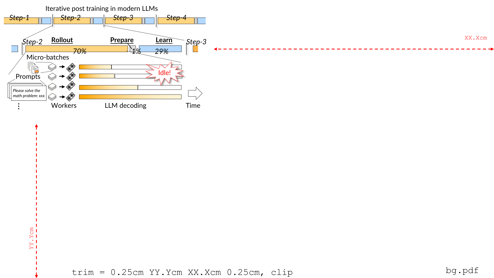
后训练工作流。领先的LLM（大语言模型）通过多步执行的强化学习（RL）进行后训练，其中每一步都遵循相同的三个阶段：
1. Rollout。该过程将训练模型作为actor，使用LLM decoding从采样的一批预定义prompt生成token。这些token用于解决数学问题等特定任务。
为加速rollout，采样的batch被划分为更小的micro-batch（下文仅涉及micro-batch，因此为不失一般性，统一使用更通用的术语batch表示micro-batch），并由多个rollout worker并发处理。每个worker将模型部署在一个或多个GPU上，必要时使用模型并行。
关于rollout batch需注意两点。
其一，为提升效率，生产环境RL训练每步采用相对较大的rollout batch size以找到足够的正奖励，例如典型的32B任务将每步总batch size设为8K。
其二，每个prompt通常只被见到一到两次（常见训练仅1–2个epoch），限制了experience replay等基于n-gram方法的有效性。
2. Prepare。在prepare阶段，rollout结果输入一组评判器（例如单独的reward model）以生成奖励，这些奖励是指导参数优化的算术信号。这些评判器是轻量级的；例如reward model仅计算一次前向传播，而非自回归生成，因此所需时间在训练步中可忽略不计。
3. Learn。给定prepare阶段的信号，learning阶段计算loss并通过反向传播更新LLM（大语言模型）参数。更新后的参数随后用于下一次rollout步骤。
rollout主导后训练的执行时间，并造成显著的GPU浪费。图2 (a) 分析了典型训练任务中总后训练时间的构成：rollout占总训练时间的70–80%。由于后训练可能在数十万块GPU上持续数天，加速rollout对降低整体训练成本至关重要。
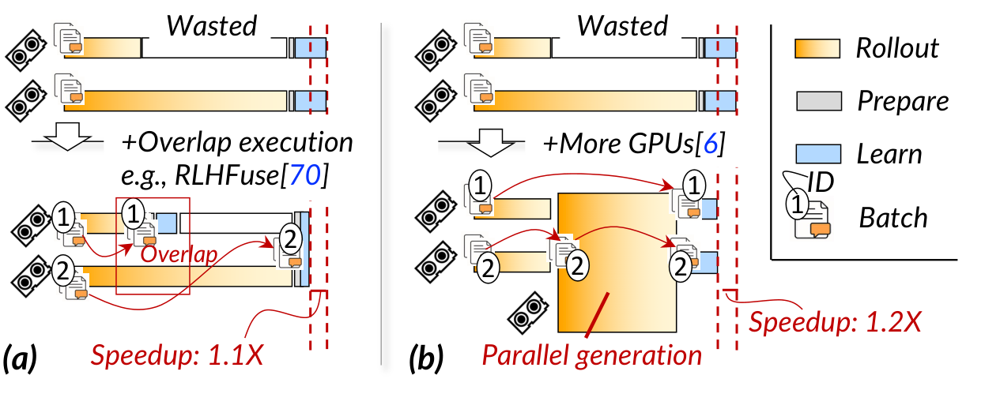
rollout仍有显著改进空间，因为长生成尾问题导致大量GPU在rollout阶段处于空闲。图2 (a) 展示了长尾rollout中的GPU气泡：在DAPO-32B-20K trace上，平均有50% 的总GPU时间浪费在等待最慢的worker完成。即使每个worker的batch size相同，各worker的rollout时间也差异显著，因为解决不同任务所需的token数量差异很大，且确切数量由LLM输出决定，难以提前预测。此外，随着训练推进，浪费还会加剧，因为模型变得“更聪明”后倾向于生成更多token来解决特定任务。
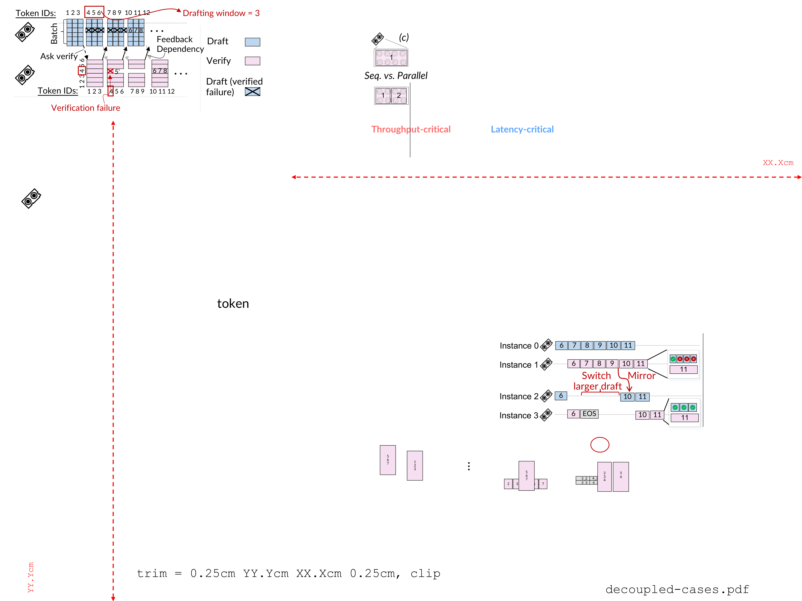
通过重叠降低GPU浪费对长尾生成仅带来少量加速。减少GPU时间浪费的一个直观方案是将其他阶段与当前rollout重叠：如图3 (a) 所示，RLHFuse等代表性方案利用空闲worker执行已完成batch（如batch (1)）的prepare和learn阶段，将快worker的这些阶段与慢worker的rollout重叠。这种重叠无法加速受最慢worker制约的rollout阶段，但能缩短端到端训练时间，
因为最慢的rollout完成后，更多GPU可以参与加速最慢batch（如batch (2)）的剩余阶段。
然而，重叠带来的加速有限，因为加速后的prepare与learn阶段仅占整体训练时间的一小部分（图2 (a) 中约为5%）。因此，在响应预算较长的trace中，RLHFuse仅将后训练加速3%，GPU时间仍被浪费，如图2 (b) 所示。
rollout的顺序生成特性是加速的关键障碍。另一种直观的解决方案是动态增加计算资源来加速长尾worker：如图3 (b) 所示，一旦某个rollout worker完成其分配的batch（例如batch (1)），它便可借助序列并行等并行LLM生成技术，帮助加速尚未完成的batch（例如batch (2)）的生成。此外，现有工作会激进地增加更多GPU（例如通过分配spot instances）来加速缓慢的rollout worker，而无需等待更多GPU空闲。在该示例中，现在有三个worker共同处理batch (2) 的rollout。遗憾的是，如图2 (b) 所示，即使为rollout配置两倍的GPU，端到端训练时间也仅提升1.2–1.3倍。加速受限的根源在于rollout的顺序、访存受限（memory-bound）特性：token必须逐个生成，额外的通信开销使张量并行或序列并行几乎没有发挥空间；此外，在访存受限时，数据并行与流水线并行几乎无法带来加速。
现有系统要么加速有限，要么采用有损的加速手段，例如off-policy训练或截断尾部生成。
我们寻求一种与算法无关的系统级方案来实现快速rollout。
机会：用于rollout的推测解码。这是加速顺序式LLM生成的常用技术：如图4 (a) 所示，原始生成使用正在训练的模型为当前batch迭代生成token。在推测解码 (b) 中，首先用快速草稿方法生成一串token，例如使用更小的模型。随后，草稿token由训练模型验证，通过后才被接受为生成的token。
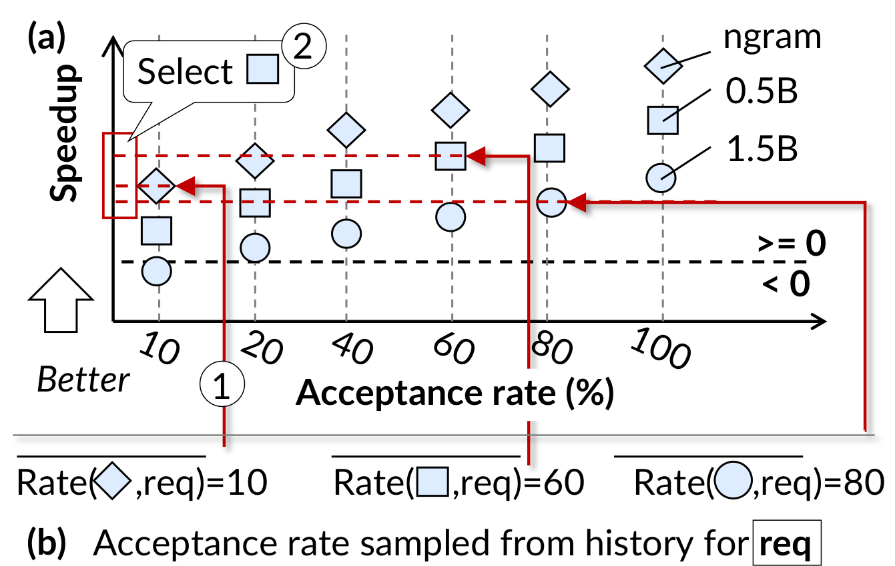
由于验证可对多个token并行执行，若GPU计算不是瓶颈，其耗时与生成单个token相当或更短。因此，若token被接受，推测解码比原始生成快得多，如图6 (b) 右半部分所示。反之，若验证拒绝草稿token，例如示例中请求3的第5个token，则被拒绝的token及其后的草稿token（例如token 5–6）将被丢弃，草稿器从token 6重新开始，因为验证会给出正确的第5个token。
挑战 #1：典型训练配置下加速有限。虽然思路直观，但我们发现把最先进的推测解码直接用到rollout上，加速幅度有限，原因是在训练中常见的每worker批大小下，推测验证本身效率不高（见图6 (a)）。图5 (a) 展示了从生产级后训练任务中收集到的每worker批大小分布，(b) 对比了在Qwen2.5-32B上用推测解码与原始生成生成最多4,096个token的耗时。可以看到，在常见的每worker批大小（例如128）下，推测解码没有增益甚至负增益。原因是：随着请求批大小增加，验证耗时的增长比生成更显著，如图6 (d) 所示，因为验证引入的token批比原始生成更大。
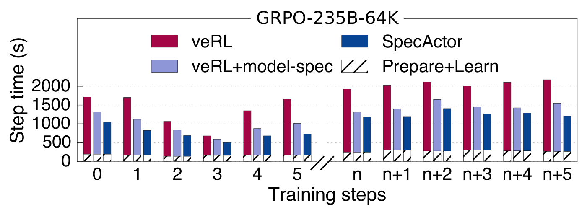
随着更多请求完成，rollout期间per-worker batch size会下降。
然而，在至少20% 的rollout time中，我们的DAPO-32B-20K trace中的batch size相对较大，这仍然需要高效的推测解码加速。在训练中，即使微小的加速也很重要，因为有可能节省大量GPU hours。
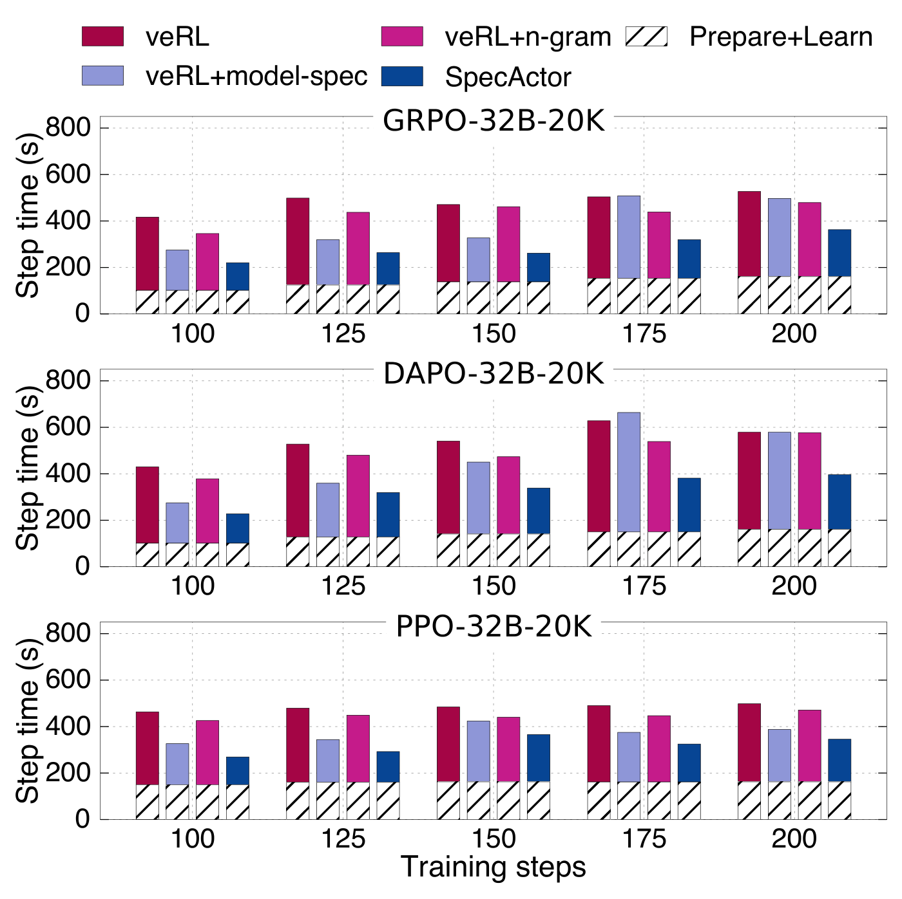
我们的解决方案：decoupled推测。我们在引言中提到，SpecActor把draft与验证之间的依赖解耦，从而让GPU在推测解码中被充分利用。如图6 (c) 所示，与草稿器必须等待验证器的传统耦合执行不同，我们 (1) 把草稿器和验证器放到不同的GPU上，(2) 允许草稿器不等验证器、持续激进地草稿。这种执行方式给验证端让出了更多GPU时间：我们只需为草稿器分配少量GPU，避免大量GPU在草稿阶段利用率不足。注意，在同一组GPU上，解耦执行会提高验证端的每worker批大小：在我们的例子里批大小翻了一倍。这并不会抵消解耦带来的收益，因为以两倍批大小（从128到256）做验证只多出1.4倍延迟（见图6 (b)）。此外，我们的放置方法会配置合适的并行度，把验证分散到更多GPU上，进一步压低成本。
解耦推测解码的风险是：接受率下降时会浪费更多GPU资源。在图6 (c) 的例子中，如果第1到第3个位置中有token被误推测，额外草稿出的token（4到6）就会被丢弃，而这在耦合推测中不会发生。我们发现这对多数请求影响很小，因为它们的接受率仍然很高，解耦执行的加速足以抵消浪费，仍能快速压低每worker批大小。为了应对接受率显著下降的请求，我们只放松、不完全丢弃draft-验证依赖：用draft window控制激进程度，即草稿器只允许超前验证器一定数量的token。一旦检测到某个请求的接受率明显下降，我们的请求级重配置就会在线调整这些窗口。
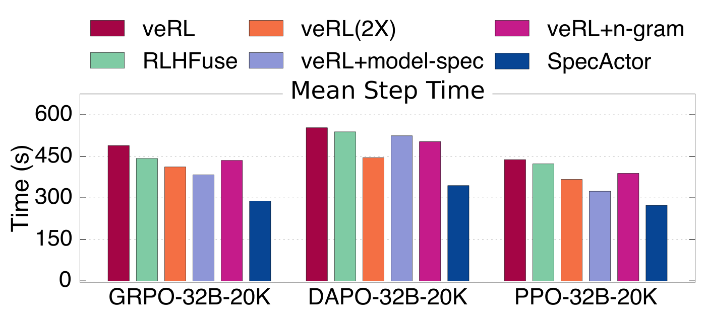
挑战 #2: 在没有先验知识的情况下选择最佳draft methods。选择最佳的draft method对确保高加速至关重要，但难度很大，因为每个prompt的最优draft method各不相同且无法先验得知。这种多样性源于给定请求的接受率差异。图7展示了从训练trace采集的一批请求中，不同draft method在不同请求上的加速效果：许多请求在0.5B草稿模型下加速最高，部分请求需要1.5B模型，还有一些需要n-gram等统计方法。直接并行执行多种draft method不可行，因为这需要显著更多的GPU：不仅要承载多个draft model，还要验证它们的输出。
我们的方案：Fastest-of-N推测。在rollout开始时，利用已做性能分析的接受率选择估计最优的draft method，依据是：虽然每个prompt的接受率差异显著，但对大批量而言，平均接受率在统计上稳定。因此基于平均值的选择很可能接近该批次的最优解。最优draft依据离线构建的ladder选出，该ladder综合考量了主要方法，包括基于模型的与基于n-gram的。
在rollout过程中，当请求完成释放出更多GPU时，SpecActor动态利用空闲GPU为尾部请求部署更多draft method，此时并行草稿生成自然更接近最优draft method，因为只要最快的draft method生成出全部token，该请求即可视为完成。如图6 (d) 所示，若worker 3空闲，我们加入次优的draft method（1.5B）来加速未完成的请求。注意，示例中只增加了一个验证实例，因为草稿器相对轻量，可以捎带在其他worker上。若1.5B草稿模型更早完成，该请求即完成，并从其他worker（例如worker 0和1）上移除。
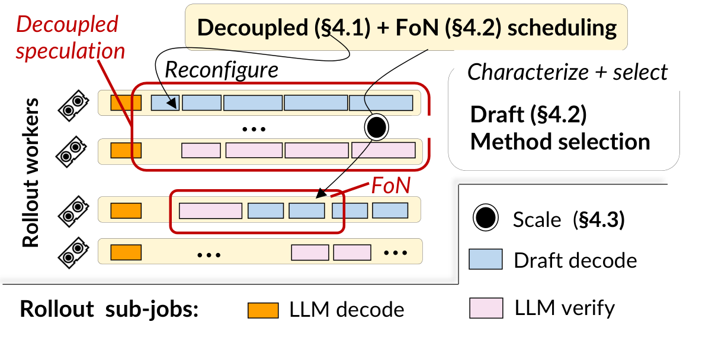
系统架构。图8展示了SpecActor的系统架构：global调度器在初始rollout阶段搜索高效的解耦推测方案；每个worker在运行时针对低接受率请求动态重配置执行计划以提升效率。global调度器监控各worker的GPU使用情况，为长尾请求部署额外的draft method。我们的运行时高效支持Fastest-of-N推测所需的扩展原语。
方法。我们采用两步调度方法实现高效的解耦推测：(1) 在rollout step开始时确定最优placement，即分别将多少worker分配给草稿与验证，以最小化batch完成时间。在rollout过程中，(2) 动态监控运行中请求的接受率，及时调整其激进draft的token数量（通过draft window），以最小化验证失败的影响。
我们选择在rollout过程中仅调整每个请求的draft window，而不调整运行中batch的整体placement，原因有三。第一，最优placement依赖对系统执行的建模，但随着请求完成导致batch size持续减小，该建模的准确性不断下降。第二，重新配置placement的开销可能超过其收益。最后，由于采用最优初始placement的解耦执行，batch size迅速收缩，我们不再需要最大化计算效率，而 (2) 对尾部请求的细粒度调整已足以带来充分的加速。
下面首先描述如何通过draft window控制浪费的token，然后介绍这两种策略。
Drafting window（w）与松弛的draft–验证依赖关系。为控制误推测造成的浪费，我们设置一个与先前工作类似的窗口：一旦草稿器向验证器发送w个token，它只被允许再激进draft另外w个token。若验证器尚未完成验证，草稿器即停止等待验证器的反馈。如此，在推测失败时草稿器最多浪费2w − 1个token，如图9所示。
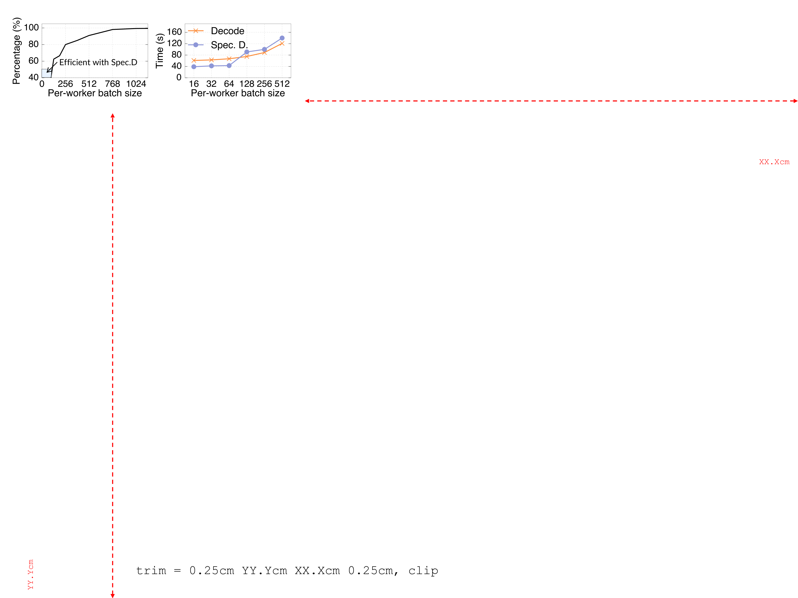
1. 解耦推测执行计划。在每个rollout step开始时，给定draft方法、被训练的模型和可用的GPU，planner会为整个batch确定合适的draft window，并通过把草稿器与验证器分配到不同GPU上得到一份高效的初始解耦推测执行计划。该计划在整个后训练过程中只需执行一次：每一步中每个worker的初始批大小不变，而接受长度（每次验证的平均输出长度）对主流草稿器而言是稳定的，如图10所示。我们报告的EAGLE接受长度低于TLT（按TLT作者说明未做prompt调优），因为我们的rollout采样温度设为1.0，并使用面向大batch调优的配置，这是后训练中常见的生产设置。
寻找最优执行计划需要求解不同草稿器与验证器并行配置的组合问题，并使用draft window精确建模推测解码的性能。为简化问题表述，我们沿用先前工作的假设：开发者已提供一组可用于运行验证器的GPU配置（G），即一份模型参数如何在一组GPU上划分。对于草稿器，因其轻量，我们假设仅使用一个GPU。
算法1描述了我们的算法，其本质是基于枚举的搜索，并采用解耦执行感知的剪枝来加速该过程。首先，给定一批待生成的请求（B），我们选择一个验证配置（第2行），并针对不同数量的draft GPU（第3行）和不同的draft window大小（第6行）估计其在解耦执行下的性能（当前TGS）。我们持续选择执行方案，最终选取估计生成时间最小的方案（第8–10行）。
为缩短搜索时间，我们通过以下方式剪枝枚举空间：(1) 利用草稿器所需GPU数量少于验证器这一观察（第3行），(2) 剪除任意过大的draft window，因为过大的窗口只会增加误推测时的计算浪费（第5行）。
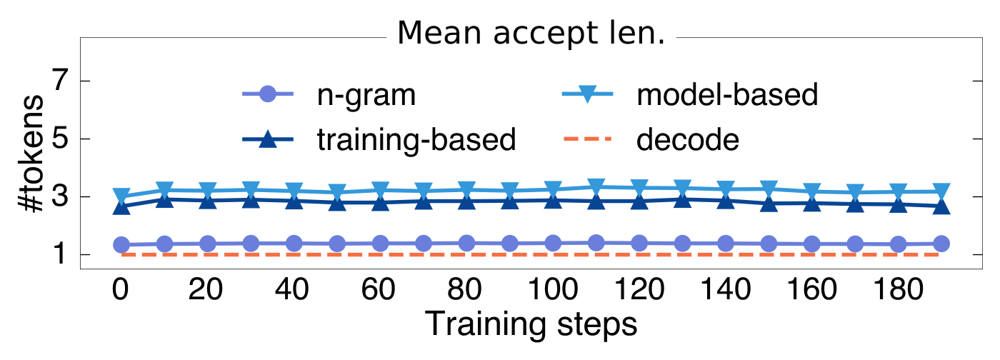
对TGS建模。规划的一个关键环节是为解耦执行建模性能，即token生成速度（TGS）。我们采用自底向上的方法，先对草稿器与验证器的执行时间建模，再转向TGS期望的建模，同时考虑在选定draft window下因误推测所浪费token的影响。
给定一批请求b、草稿器worker数量gd以及执行配置为gv的验证器，draft（D(gd)）与验证（V(gv, w)）时间可近似为关于批次大小（b）的仿射函数：
D(gd, b) = b × D′(gd) + α(gd)；V(gv, w, b) = b × V′(gv, w) + β(gv, w)
其中D′(gd)、V′(gv, w)、α 与 β 是离线性能分析拟合出来的超参数，与已有工作类似。
因此，在解耦执行范式下生成w个token的总生成时间可建模为：
IL(gd, gv, w, b) = max{w × D(gd, b), V(gv, w, b)}
除执行时间外，还需考虑误推测导致的减速。给定draft window w与一批请求中单个token的接受概率p，我们沿用已有工作的做法，先对draft window内给定n个token时接受其中若干token的概率建模，再据此计算期望浪费的token数。区别在于，我们进一步考虑解耦执行中激进推测带来的额外浪费token。具体而言，在draft window内，给定估计接受概率（p）时接受a个token的概率为：:
P(a, w) = pᵃ × (1 − p)（当0 ≤ a ≤ w − 1）；P(a, w) = pᵃ（当a = w）
p使用前述步骤的设置进行性能分析，我们发现它对相对较大的批次请求相当稳定（见图10）。
为draft window w起草所生成token总数的期望为：
τ(w) = Σ pᵃ(1 − p)(a + 1)/2（a从0到w − 1，部分接受）＋ w × pʷ（完全接受）
即token在不同位置被接受时生成的期望token数之和。
综上，TGS的期望为：
TGS(gd, gv, w, b) = τ(w) / IL(gd, gv, w, b)
Algorithm 1: Decoupled execution plan generation at the start of the rollout
Input : global batch size B; cluster GPU count G; verification configs G_cfg
Output: GPUs for drafting gd*, GPUs for verification gv*, draft window w*
TGS* <- 0; (gd*, gv*, w*) <- (0, 0, 0)
for each verification config gv in G_cfg:
for gd <- 1 to gv: // drafter needs fewer GPUs than verifier
b <- ceil((gd + gv) * B / G)
w_max <- max(ceil(V'(gv, w) / D'(gd)), ceil(beta(gv, w) / alpha(gd)))
for w <- 1 to w_max: // prune overlarge windows
TGS_cur <- TGS(gd, gv, w, b)
if TGS_cur > TGS*: update TGS* and (gd*, gv*, w*)
return (gd*, gv*, w*)Algorithm 2: Request-level reconfiguration for reducing mis-speculation overhead
Input : pre-searched decoupled plan (gd*, gv*, w*);
requests whose acceptance rate is below average, set R
Output: per-request draft plan (w_r, m_r) for r in R;
w_r = request draft window, m_r = coupled or decoupled speculation
for each request r in R:
p <- ProfileProbability(r)
(w_c, tgs_c) <- argmax_w TGS_coupled(w, p, b=1)
(w_d, tgs_d) <- argmax_w TGS_decoupled(gd*, gv*, w, p, b=1)
(w_r, m_r) <- SelectBetter((w_c, tgs_c), (w_d, tgs_d))
return {(w_r, m_r) : r in R}2. 动态请求级重配置。在decoupled execution期间，动态监控每个请求的接受率，并据此调整其draft window。Algorithm算法2总结了重配置算法，该算法在rollout期间被周期性调用。
调用时，算法首先检查接受率低于平均值的请求集合（第1行），并复用前述用于decoupled execution的性能模型，以及coupled execution的扩展建模（耦合执行的TGS()，因篇幅限制省略，其建模逻辑与decoupled建模类似），以枚举最优配置。
在线重配置需注意三方面。第一，不频繁触发重配置，原因在于：(1) 接受率可能在短时间内剧烈变化；(2) 过于频繁的重配置可能引入性能不稳定。当前每1000次解码迭代重配置一次系统。第二，并发执行不同window size的请求，以最大化GPU利用率。为实现高效协同执行，将具有不同draft window的kernel调度进融合的CUDA graph。最后，coupled execution与decoupled execution之间的切换简单直接，只需暂停被切换请求的aggressive draft即可。
选择rollout的draft method的目标是选取加速比最高的方法。难点在于平衡draft efficiency与接受率，因为给定请求在执行前接受率未知。
应对该难点的思路是：通过离线性能分析可以以接受率为参数估计不同draft method的加速比。基于该信息，在rollout开始时使用batch request的平均接受率贪心选择draft method，并可进一步根据运行时收集的接受率改进选择。
Draft ladder。给定固定接受率，draft ladder提供不同draft方法的加速比信息，如图11 (a) 所示。它可通过离线profiling高效构建，且无需使用训练模型，原因在于：(1) 草稿器的执行与训练模型无关；(2) 加速比可按给定接受率随机接受token来模拟。因此，离线profiler直接以模拟的接受率运行各draft方法，从而构建ladder。
当前ladder纳入主流draft方法，包括基于模型的与基于n-gram的两类。对基于模型的draft，使用与大模型同系列的checkpoint，该checkpoint在后训练流程之前联合发布。此做法与先前的推理工作类似，但不能使用thinking版本的draft模型，因为它们通常在大thinking模型就绪后才蒸馏得到。我们也考虑过更多draft方法，包括基于训练的草稿器，如EAGLE系列。未纳入MTP，因为所评估的模型未集成它。需要强调，我们的设计与draft方法正交，若更多draft方法能进一步提升推测加速，集成它们很可能使SpecActor更快。
rollout开始时的draft方法选择。初始阶段，基于历史profiling得到的接受率，为整个batch选择一种draft方法。profiling只需执行一次，因为profiling结果在不同step间稳定（见图10）。不能选择多种方法，因为每个草稿器所需的验证量相近，而初始阶段GPU算力不足。
图11 (b) 给出选择过程：对三种示例draft方法（n-gram、0.5B与1.5B模型草稿），先查询这些方法已做性能分析的接受率，并将其作为该batch的估计接受率。据此估计每种draft方法的加速比（(1)），再选出其中最快者（(2)）。
Algorithm 3: Greedy Fastest-of-N assignments
Input : active request set R; candidate draft method set D;
W_d = workers responsible for draft method d; W = all free rollout workers
Output: added drafters and the requests they serve, M = {(r, d) : w}
R <- sort R by GetAcceptRate(r) ascending
D <- sort D by GetLadderRank(d) ascending
for each request r in R:
for each draft method d in D:
if M(r, d) is None:
w <- GetMinLoadWorker(W_d, b_max)
if w is not None:
M(r, d) <- w; load(w) += 1
return M贪心Fastest-of-N分配。为应对尾部请求初始选择次优的问题，一旦batch完成后草稿器与验证器的GPU均空闲，就贪心地部署更多draft方法。算法3给出在存在可用worker时分配更多草稿器（及其对应验证器）的算法。只要出现空闲worker，该例程就会被迭代调用。
算法按接受率倒序对请求排序后分配草稿器（第1行），因为这些请求从推测解码中获益甚微。对每个请求，若尚未分配，则依据前述draft ladder加入加速比最高的草稿器（第2、5行）。贪心地为请求分配尽可能多的草稿器，直至没有可用worker或待处理请求（第3–9行）。若某请求的分配已完成，则处理下一个请求。
这里采用draft-first设计：在转向下一个请求之前，尽可能将多个draft方法分配给同一个请求。其依据是，接受率最低的请求很可能遭遇次优draft，因此在空闲worker数量充足时，draft-first策略能自然为其选择最优draft方法。若空闲worker数量不足，则优先选择draft ladder中排名更高的draft方法。
关于可演进draft方法的讨论。我们的ladder假设draft模型在后训练期间保持冻结，因为发现draft方法的接受率在不同step间保持稳定（即使间隔很长），见图10。
我们推测这是因为即使训练模型变得更聪明，只要训练模型能及时纠正错误token，许多简单token仍可被draft。注意，近期的draft训练优化与我们的设计正交，因为它们同样可应用于我们的小模型。此外，集成这种演进需要对rollout和训练引擎都做侵入式修改。因此，我们未将其纳入实现。
SpecActor仅优化rollout阶段，不对训练引擎做侵入式修改，这与依赖训练侧改动的方案相反。运行时扩展也很轻量：支持解耦执行仅需在草稿器与验证器之间传递消息，我们进一步引入两个原语来支持Fastest-of-N推测：
模型规模。该原语将服务实例（要么是草稿器，要么是验证器）部署到特定worker。这类似现有服务引擎中的模型自动扩缩容，我们采用了其全部设计，包括在worker上预固定服务引擎、使用GPU执行上下文池预物化CUDA graphs，以及通过GPU间高速网络传输模型权重。为进一步消除将大型训练模型权重加载到GPU的开销，尤其是在部署新验证器时，我们观察到验证器仅部署到空闲的草稿器上，且由于draft模型规模小，草稿器的GPU显存占用很低。因此，我们进一步将训练模型固定到草稿器上，以实现零成本验证器部署。
KVCache规模。除模型外，在扩缩新草稿器对应的验证器时，新验证器需要一份KVCache（LLM（大语言模型）计算的中间结果）来加速计算。一个挑战是，在rollout后期，KVCache可能变得很大，因为其大小与模型规模和已生成token数成正比。为此，可利用经典KVCache恢复方法，通过网络传输尾部KVCache并从头重算，以加速KVCache扩缩。
我们在veRL上实现了SpecActor。veRL是当前最先进的后训练框架，已集成CUDA graph、prefix caching和FlashAttention kernel等已知的推理优化。
测试平台。我们在最多含512块GPU的生产训练集群上评估SpecActor。这些GPU组织为节点，每个节点包含八块Hopper（80 GB）GPU，通过400 GB/s NVLink互连，跨节点GPU之间具备高达400 Gbps的RDMA连接。
评估的trace：模型、算法与rollout温度。与先前工作类似，我们评估Qwen系列模型（Qwen2.5-32B），因其是最流行的开源LLM（大语言模型）之一，且被算法设计者广泛使用。我们基于生产设置，针对3条代表性的200步训练trace进行评估，涵盖不同（主流）后训练算法：
● GRPO-32B-20K。该trace使用GRPO算法训练Qwen2.5-32B，GRPO是一种代表性的无value model的后训练方法，用于训练DeepSeek系列等高质量模型。该trace在每一步采样总batch为8,192条prompt（包含group sampling因子），每个batch中模型以20K token的预算生成回复。该trace运行在256块GPU上，每个rollout worker的张量并行（TP）度为4，因此每个worker的初始batch size为128。
● DAPO-32B-20K。该trace同样使用DAPO训练Qwen2.5-32B（DAPO是AI学术界与工业界的热门算法），每步batch size为16,384，回复预算为20K token。该trace运行在256块GPU上，每个rollout worker的TP度为4，因此每个worker的batch size为256。DAPO需要更大的每步batch size，因为其训练方法会过滤掉rollout过程中生成的低质量回复。
● PPO-32B-20K。PPO是另一种广泛使用的RL算法。训练模型为Qwen2.5-32B，PPO trace的不同之处在于：(1) 它额外使用一个32B critic模型生成value，并将critic与actor模型一同训练；(2) 同时，它对每条prompt只采样一个回复。每步batch size为4,096，最大回复长度为20K token。该trace在与上述两条trace相同的集群配置上运行。
在所有实验中，我们将LLM（大语言模型）生成的采样温度设为1.0（这是后训练中的常见设置），但该设置会对推测解码产生负面影响。
LLM后训练需要此类设置来探索更多样的响应并避免entropy collapse；否则，训练后的模型会过早收敛，限制其进一步提升性能的潜力。
受GPU时间约束，实验聚焦于稠密32B模型，同时也在大型Qwen3-235B MoE模型上进行了实验，以验证SpecActor的有效性。
评估指标。我们重点报告端到端训练时间与rollout时间，其中训练时间是算法开发者最关键的指标，而rollout主导了时间开销。为保证评估具有代表性，我们对所有训练step均匀采样至少10%，使用采样step处的训练checkpoint进行生成，并报告其训练与rollout时间。
基线。我们将SpecActor与以下基线进行对比，并仔细调优了其实现与性能。所有系统均采用vLLM v0.10.0 engine进行rollout。具体而言，在我们的平台上，当每worker batch size为1时，Qwen2.5-32B模型的解码延迟可低至13ms。
对于所有基线，我们报告训练的最优配置
即FSDP degree为32，以及8-way sequence parallelism。
● veRL是Seed使用的开源后训练系统，SpecActor基于它构建。除本节开头提到的推理优化外，它还进一步引入高效参数更新等技术，以快速为rollout更新参数。
● RLHFuse是最先进的后训练系统，通过重叠prepare与rollout阶段来减少长尾生成造成的bubbles。由于其未开源，我们仔细复现了其设计，并在短上下文任务上实现了相近的加速效果。
● veRL（两倍GPU）为veRL配置了原始trace所用GPU数量的两倍，代表像RLBoost那样用更多GPU加速RL时的最优性能。
● veRL +（vanilla）model-spec。为说明所提技术的有效性，我们还对veRL进行对比，在推理系统中引入基于模型的推测解码。我们运行coupled推测，draft方法依据Fastest-of-N推测的第一阶段选取。对于32B训练，0.5B是加速效果最好的选择。
● veRL +（vanilla）n-gram。N-gram是其他工作用于加速rollout的常用推测解码方法。我们基于vLLM的n-gram（v0.10.0）集成了其基线，并引入SAM等近期技术进行增强，以尽可能贴近其实现（其代码未开源）。我们还用vanilla推测解码增强veRL。具体而言，我们采用基于small-LLM的推测，以便读者更好地理解我们的设计如何改进现有推测解码方法。我们将其谨慎地移植到vLLM上，以利用其v1代码库。
SpecActor使用的draft方法。除另有说明外，我们为Qwen2.5-32B选取可用的草稿器：Qwen2.5-0.5B、Qwen2.5-1.5B，以及一个n-gram草稿器。其他草稿生成方式（如EAGLE）需要额外的训练支持，而我们评估的所有模型并不都支持。
图12展示了不同方法在各trace上的端到端训练step时间。我们测量了全部1/10的采样训练step，并报告不同方法的平均step时间。每个step都使用trace中完全相同的model checkpoint和prompt batch，以忠实复现真实工作负载。相比veRL、RLHFuse等基线，SpecActor的端到端训练快1.5–1.7倍。对于vanilla推测解码基线，SpecActor在不同trace上训练时间缩短1.2–1.5倍。即使与使用两倍GPU的veRL相比，SpecActor仍实现1.3–1.4倍的训练加速。关键原因在于通过高效机制加速rollout：在rollout阶段，SpecActor的平均生成速度比veRL快2.0–2.4倍。

SpecActor的平均rollout时间缩短达1.4–2.0倍，即便与同样引入推测解码加速的model-spec和n-gram方法相比也是如此。原因有二：其一，两者都因初始阶段较大的per-worker batch size而效率低下。
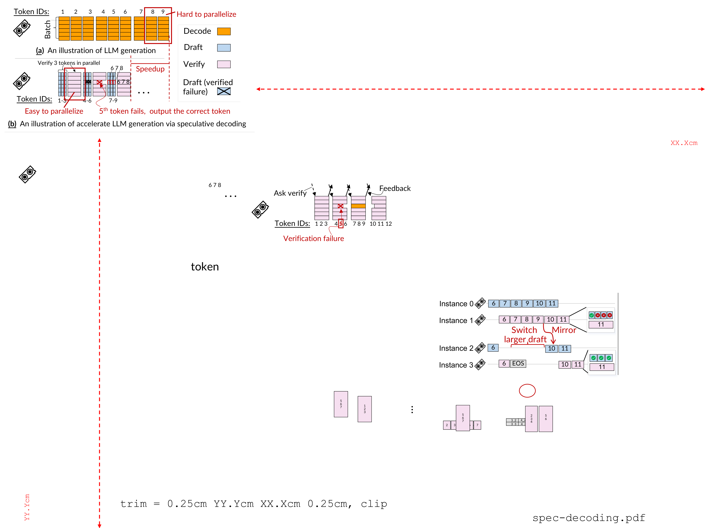
其二，两者（尤其是n-gram）对长尾请求的接受率都偏低，因为n-gram方法在训练轨迹中常见的高temperature sampling且history prompts稀少的场景下表现不佳。具体而言，n-gram对最后完成的请求所跳过的iteration在各类轨迹中为16.9–43.6%，而SpecActor凭借Fastest-of-N推测达到40.9–73.5%。
图14展示了在256块GPU上以GRPO算法训练Qwen3-235B MoE模型时SpecActor的性能。受GPU时间与可用checkpoint限制，仅评估了少量步骤：后训练起始处的0–5（使用Qwen3-235B-Instruct-2507）以及训练末尾的n到n+5（使用Qwen3-235B-Thinking-2507）。区别在于较后的步骤倾向于生成更长的response。per-step batch size为256，受GPU显存限制而略小，每个rollout worker使用expert parallelism (EP) 为8以获得更高的decode效率。

draft ladder由后训练pipeline之前产出的小模型扩展：Qwen3-4B-2507-Instruct（与235B一同发布）、Qwen3-0.6B和Qwen3-1.7B。
相比veRL，SpecActor将训练时间缩短1.4–2.3倍，rollout加速1.5–2.6倍。得益于decoupled与Fastest-of-N推测，其性能也优于vanilla mode-spec 1.1–1.5倍。即便per-step batch size相对较小，MoE模型中的验证开销依然很高，并会因expert communication进一步加剧。Qwen3-4B-2507-Instruct在推测上的表现明显优于另外两个模型，推测其training pipeline与235B紧耦合，因而与235B的对齐更好。
随着模型在不同training steps上演进，推测解码的效果随之变化。图13进一步给出不同训练步骤的详细延迟breakdown。为便于展示，选择性呈现100–200 training steps之间的部分步骤，以考察推测解码在实际后训练中的效果。内部accuracy测试确认该差距足够大，因此不同sampling steps下训练模型的 “smartness” 存在差异。
SpecActor在所有步骤中仍保持最短的rollout time。具体而言，在第175与200步，veRL + model-spec和n-gram均无法提供加速，原因是模型变聪明后，更多prompt会产生更长的response，在相对较大的per-worker batch size下导致rollout steps增多。相比之下，SpecActor稳定地将rollout time缩短1.8–2.7倍，在不同训练轨迹中比vanilla推测解码基线快1.4–2.6倍、1.2–2.2倍、1.2–2.6倍。得益于快速生成，更多worker提前完成，为SpecActor留出充足的FoN调度空间。
图15通过消融研究验证所提出各项技术的有效性。受篇幅限制，此处仅报告一个step，不同trace中的其他step结果类似。
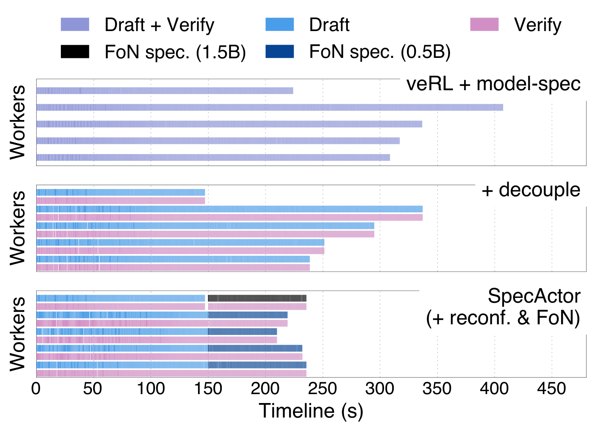
首先，vanilla推测解码仅降低2.6% 的rollout端到端延迟，幅度很小，原因是大批量验证的低效以及针对长尾请求的draft方法并非最优。
借助decoupled推测解码，rollout加速1.3倍。在decoupled推测解码的基础上，dynamic reconfiguration进一步将rollout时间缩短1.2倍，得益于更优的初始执行配置，以及对接受率较低的worker进行动态重配置以减少浪费的token。最后，Fastest-of-N推测解码进一步将端到端rollout加速1.2倍，得益于其能够利用多种draft方法提升长尾请求的接受率。
图16深入分析了rollout期间不同worker采用我们的技术所完成的工作，以此结束对SpecActor的评估。

为便于展示，仅采样5个worker，重点选取提前完成的worker与最慢的四个worker。
首先，图16第一行显示，vanilla推测解码仍受长尾worker困扰：初始阶段所有worker执行都较慢，而在末尾，初始选定的draft方法无法加速最慢的请求。采用decoupled推测解码（第二行）后，推测解码性能提升1.1–1.5倍，但仍因draft方法并非最优而受长尾请求影响。启用Fastest-of-N推测解码后，在图16的151s处，空闲出来的worker被分配不同的draft方法（用不同色块表示不同draft方法）。这使得最慢请求随后加速1.5倍。
通过算法修改实现rollout加速。一些工作提出通过算法改动来加速rollout，例如跳过尾部生成。这类修改实质上使训练变为off-policy的变体（相对于本文所针对的on-policy设置），理论上收敛不稳定，并且我们观察到它们在生产中并不总是被采用。
资源受限设置下的rollout加速。Seer和RollPacker等近期工作针对资源受限设置下的长尾生成问题，即每个worker的GPU容量有限，无法容纳所分配的batch。
因此，batch必须进一步划分为多个sub-batch，每个sub-batch顺序执行，它们的优化在于对sub-batch重新排序或重新打包，以减少sub-batch执行之间的GPU浪费。相比之下，SpecActor加速的是batch能够装入每个worker的GPU显存的长尾生成，这是常见的生产设置（见图5 (a)）。一般来说，执行一个大的batch比顺序执行划分后的sub-batch更快（在资源充足的情况下），因为生成时间随batch size呈亚线性增长（见图5 (b)），更不用说使用打包技术时sub-batch之间可能的切换开销。
通过推测解码加速rollout的同期工作。若干同期工作共享类似的高层思路，即使用推测解码来加速rollout。SpecActor进一步解决了对推测解码不友好的batch配置中的低效率问题，以及跨请求的最佳草稿器选择未知的问题。
与本文最接近的工作是TLT，它为推测rollout选择基于训练的草稿器（EAGLE）。它未考虑大batch效率问题，其性能可通过我们的解耦推测进一步提升。此外，我们的draft ladder与Fastest-of-N推测相比其选择的EAGLE进一步提供两个优势：(1) EAGLE比我们ladder中基于模型和n-gram的方法更难部署，因为它需要额外训练以匹配目标模型，而目标模型并不总是可训练得到，或需要额外调优；(2) 我们发现，在未对EAGLE进行prompt调优的情况下，使用TLT提供的模型时，其接受长度低于我们所考虑的草稿器（见图10）。最后，TLT采用近似采样以提高接受率，代价是训练精度。相比之下，SpecActor使用精确匹配以确保rollout响应的正确性。
推理中的推测解码。在rollout中使用推测解码的优化目标与推理系统存在本质差异。具体而言，rollout优先考虑整体batch执行效率，单个请求的延迟并不关键，而推理系统必须保证所有请求的低延迟。这带来了新的挑战，我们通过Decoupled与Fastest-of-N推测方法加以解决。
RL rollout可以在不牺牲原始训练算法等价性的前提下，通过快速推测解码实现高效。SpecActor以两项新技术使推测rollout高效：(1) Decoupled推测方法，提升常见训练配置下的推测效率；(2) Fastest-of-N推测方法，在rollout过程中动态适配draft方法。
SpecActor相比最先进的基线将训练效率提升1.4–2.3倍，并比普通推测rollout快1.1–2.6倍。
参考：https://arxiv.org/pdf/2511.16193